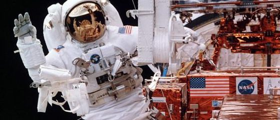

-

Primul om pe Luna
19 iulie 1969Apollo 11 este numele primei misiuni în care omul a pășit pe suprafața satelitului natural al Pământului, Luna. Este în același timp și cea de-a cincea misiune cu echipaj uman din Programul Apollo, gestionat de NASA, și a treia care plasează oameni pe orbita lunară. Lansată pe data de 16 iulie 1969, misiunea era constituită din Neil Alden Armstrong, comandantul misiunii, Michael Collins, pilotul modulului de comandă și Edwin Eugene „Buzz” Aldrin Jr., comandantul modulului lunar. Pe data de 20 iulie, Armstrong și Aldrin au devenit primii oameni care au pășit vreodată pe Lună, în timp ce Collins orbita deasupra lor.[3] Misiunea a îndeplinit visul președintelui american John F. Kennedy, acela de a trimite un om pe Lună până la sfârșitul decadei anilor `60, într-un discurs ținut înaintea unei întruniri a Congresului pe 25 mai 1961.[4] Criticii filmului "aselenizarii" din 16 iulie 1969 afirma, pe baza dovezilor incluse in film [1], ca acesta este realizat intr-un studio de pe pamant. Scopul falsificarii ar fi, dupa unii, justificarea fondurilor deturnate din programul Apollo, care n-ar fi ajuns niciodata pe Luna. Altii considera ca misiunea Apollo 11 ar fi ajuns pe Luna dar filmul cu ce s-a petrecut acolo este tinut secret, publicului servindu-i-se un fals.[5]
Read More -

ALIEN SIGNAL DISCOVERY
FEBRUARY 3, 2023You can remove any link to our website from this website template, you're free to use this website template without linking back to us.
Read More
-
Primul telescop electronic

Nașterea telescopului refractor este de obicei atribuitǎ lui Galileo Galilei, care a arătat prima aplicație în Veneția în 1609. De fapt, primele lentile au fost construite în 1607 de către artizani olandezi care le-au aplicat instrumentelor rudimentare cu putere de rezoluție foarte mică. Proprietățile lentilelor, oricum, erau cunoscute de ceva timp și trebuie să fie atribuit lui Galileo meritul de îmbunătățire și prima utilizare astronomică. Deși se pare că primul telescop refractor a fost construit în 1608 de către olandezul Hans Lippershey (circa 1570-1619), alte surse îi atribuie inventarea primului telescop lui Joan Roget, fabricant de ochelari din Girona, Catalonia, care a trăit în jurul anului 1600.
FEBRUARY 6, 2023 -
RECENT POSTS
-

ALIEN LIFE
FEBRUARY 3, 2023 -

THE GALAXY
FEBRUARY 1, 2023
-